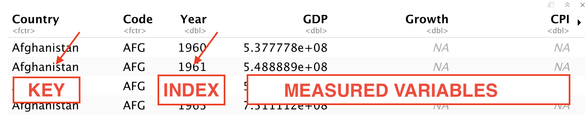
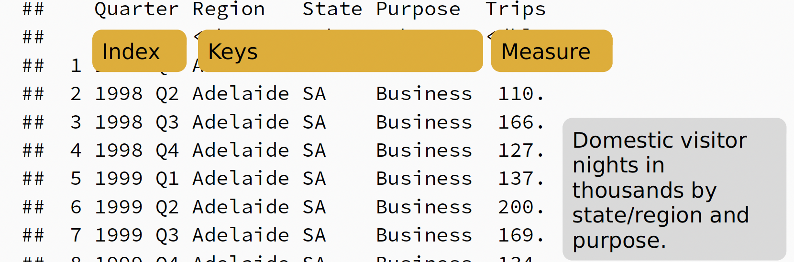

Introduction to Tsibbles#
Source: Tidy Time Series. Rob Hyndman. Rstudio 2020
About#
The tsibble package extends the tidyverse to temporal data. Built on top of the tibble, a tsibble (or tbl_ts) is a data- and model-oriented object. The tsibble package aims at managing temporal data and getting analysis done in a fluent workflow.
This practice is available on Canvas in RMD format. Make sure you are able to run it and understand the structure of Rmarkdown. For all subsequent practice activities you need to creaate a new rmarkdown file, add content from the practice and knit (run).
Tsibble Content
library(tidyverse) # Data manipulation and plotting functions
library(tsibble) # Time series manipulation
library(fable) # Forecasting functions
library(feasts) # Time series graphics and statistics
library(tsibbledata) # Tidy time series data
library(fpp3) # All of the above and more
Install required packages:
install.packages(c(
"tidyverse",
"fpp3",
"GGally",
"sugrrants"
))
Tsibble Objects#
Object contains:
An index: time information about the observation
Measured variable(s): numbers of interest
Key variable(s): optional unique identifiers for each series
tsibble data global_economy
Economic indicators featured by the World Bank from 1960 to 2017
global_economy

tsibble data tourism
A dataset containing the quarterly overnight trips from 1998 Q1 to 2016 Q4 across Australia
tourism

Tsibble Index#
Table 1. Common Time Index variables
Frequency |
Function |
|---|---|
Annual |
start:end |
Quarterly |
yearquarter() |
Monthly |
yearmonth() |
Weekly |
yearweek() |
Daily |
as_date(), ymd() |
Sub-daily |
as_datetime() |
Example 1: Create a table
mydata <- tsibble(
year = 2012:2016,
y = c(123,39,78,52,110),
index = year
)
mydata
Note
If observations are more frequent than once per
year, use a time class function on the index (see Table 1).
Working with tsibble#
We will be using some common data manipulation methods from dplyr:
mutate() adds new variables that are functions of existing variables
select() picks variables based on their names
filter() picks cases based on their values
summarise() reduces multiple values down to a single summary.
arrange() changes the ordering of the rows.
For more information, see - https://dplyr.tidyverse.org/
Example 2: Convert CSV to tsibble
prison <- readr::read_csv("prison_population.csv") %>%
mutate(Quarter = yearquarter(date)) %>%
select(-date) %>%
as_tsibble(
index = Quarter,
key = c(state, gender, legal, indigenous)
)
Note
MUTATE -> create a new column Quarter using Time Index
yearquarter(). All dates with the format 01/03/2020 are converted to Q1 2020, Q2 2020 etcSELECT -> select all columns except date
Example 3: Filter columns
PBS %>%
filter(ATC2 == "A10") %>%
select(Month, Concession, Type, Cost)
Example 4: summarise cost
PBS %>%
filter(ATC2 == "A10") %>%
select(Month, Concession, Type, Cost) %>%
summarise(total_cost = sum(Cost))
Example 5: mutate and create a new variable
PBS %>%
filter(ATC2 == "A10") %>%
select(Month, Concession, Type, Cost) %>%
summarise(total_cost = sum(Cost)) %>%
mutate(total_cost = total_cost / 1e6) -> a10